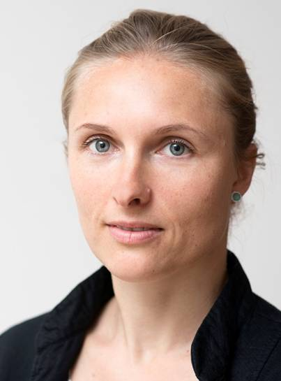

Eine Praxis für Dentosophie, Umweltzahnmedizin und angewandte Kinesiologie in Halle an der Saale. Ich arbeite bewusst ohne Bohrer und ohne Skalpell — und im Vertrauen darauf, dass der Körper mehr Antworten kennt, als die Zahnmedizin gewohnt ist zu fragen.

Ganzheitliche Zahnmedizin beginnt mit einer einfachen Überzeugung: Der Mund ist kein isoliertes Arbeitsfeld. Wie wir atmen, wie die Zunge liegt, welche Materialien wir tragen, wie der Kiefer sich entwickelt hat — all das steht in Verbindung mit Haltung, Schlaf, Verdauung und dem Nervensystem.
Meine Arbeit ist bewusst noninvasiv. Ich bohre nicht, extrahiere nicht, operiere nicht. Stattdessen arbeite ich mit der Dentosophie nach Dr. Michel Montaud, mit Prinzipien der Umweltzahnmedizin und mit angewandter Kinesiologie — immer dort ansetzend, wo der Körper selbst regulieren kann.
Wo operative oder restaurative Zahnmedizin nötig wird, arbeite ich nicht selbst am Patienten — sondern koordiniere, begleite und bleibe Ansprechpartnerin. Dafür habe ich über die Jahre ein vertrauensvolles Netzwerk aufgebaut: aus Zahnärztinnen und Zahnärzten, Logopäden, Osteopathen, Hebammen, HNO-, Allgemein- und Kinderärzten.
Sechs Betrachtungen. Ein Mensch. Welche davon zu Ihnen gehört, zeigt sich im Gespräch — nie in einem Formular.
Atmung, Zungenlage und Kieferentwicklung in Einklang bringen — mit dem Bioaktivator nach Dr. Montaud. Eine Methode, die nicht formt, sondern erinnert. Für Kinder wie Erwachsene.
Der Mund als Tor zum Körper — und manchmal auch als Eintrittspforte dessen, was ihn belastet. Materialien, Metalle, stille Entzündungen sichtbar machen. Nach DEGUZ-Leitlinien.
Ein Gespräch mit dem Körper über den Muskel — leise, präzise, respektvoll. Verträglichkeiten prüfen, Störfelder erahnen, Priorität spüren. Keine Diagnose, sondern Hinweis.
Die Zunge ist eine Formgestalterin — für den Kiefer, die Atmung, die Haltung. Übungen, die der Mund wiederlernen darf. Oft in Begleitung der logopädischen Arbeit.
Bevor ein Material in den Körper einzieht, verdient es eine höfliche Anfrage. Verträglichkeitstestung — kinesiologisch und laborgestützt — für Ihre weiterbehandelnde Praxis.
Manche Beschwerden klingen leise und kommen von weit her. Strukturierte Suche nach dentalen Störfeldern — von devitalen Zähnen bis zu alten Narben. Immer im Dialog mit umweltmedizinisch arbeitenden Kolleg:innen.
Der Mund berührt zu viele Systeme, als dass eine Disziplin ihm allein gerecht werden könnte. Deshalb ist meine Praxis bewusst als Knotenpunkt konzipiert — nicht als Einzelpraxis, die alles wissen müsste.
Ich arbeite mit ausgewählten Kolleginnen und Kollegen zusammen, die in ihrem Feld exzellent sind und dieselbe Haltung teilen: Den Menschen als Ganzes zu sehen, bevor man auf ein Symptom reagiert.
Ursprünglich chirurgisch ausgebildet, heute ausschließlich ganzheitlich und noninvasiv arbeitend — ein bewusster Weg, der klinische Erfahrung mit einer tieferen Sicht auf den Körper verbindet.
Ganzheitliche Zahnmedizin, Dentosophie & Umweltzahnmedizin
Académie Internationale de Dentosophie (AIRD) nach Dr. Michel Montaud
Deutsche Gesellschaft für Umwelt-ZahnMedizin (DEGUZ)
Curriculum der Deutschen Gesellschaft für Angewandte Kinesiologie (DGAK)
Universitätsklinikum Halle (Saale) — chirurgischer Hintergrund als Fundament
Martin-Luther-Universität Halle-Wittenberg
Martin-Luther-Universität Halle-Wittenberg
Leipziger Straße 37
06108 Halle (Saale)
Das Erstgespräch dauert 60 Minuten. Wir klären gemeinsam Ihr Anliegen, mögliche Wege und ob eine Begleitung durch meine Praxis für Sie stimmig ist.
Terminanfrage senden Oder rufen Sie an 0345 · 20 51 234